; picked in HepG2 (state 12:CtcfO, DNase); matched; chr1:36,911,969-36,912,263 (295bp)") 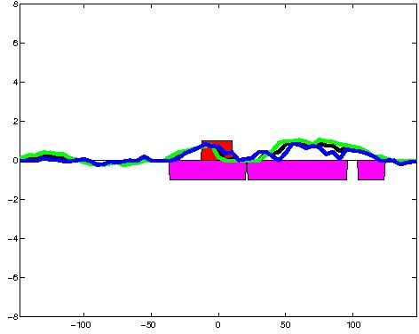
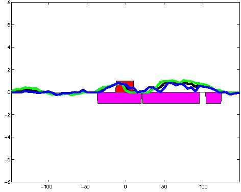
; picked in HepG2 (state 12:CtcfO, DNase); matched; chr17:16,367,109-16,367,403 (295bp)")
; picked in HepG2 (state 12:CtcfO, DNase); matched; chr3:190,102,089-190,102,383 (295bp)") 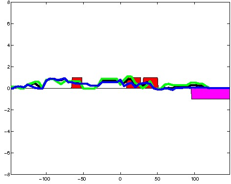
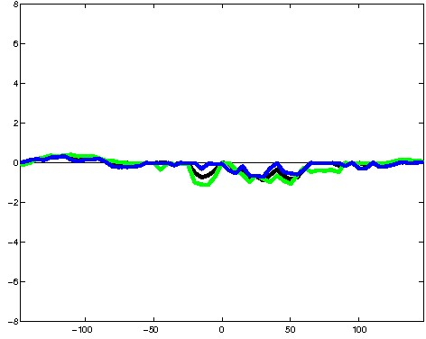
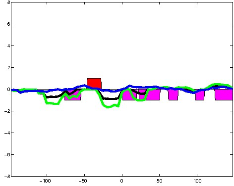
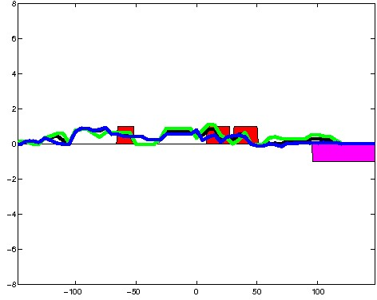
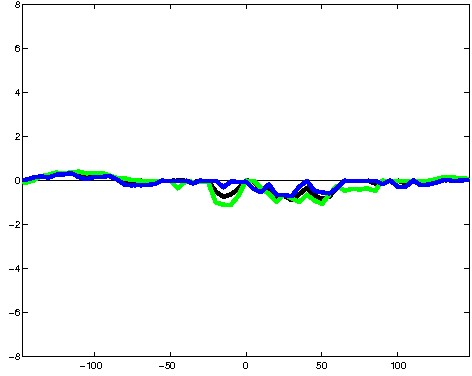
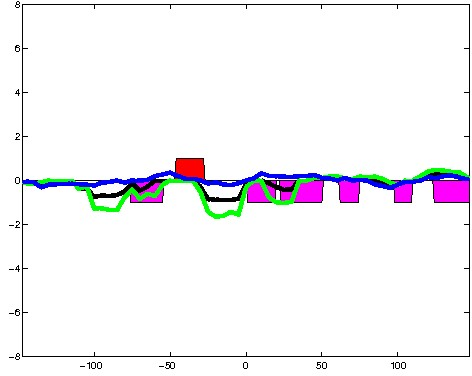
; picked in HepG2 (state 12:CtcfO, DNase); matched; chr9:73,864,669-73,864,963 (295bp)")
; picked in HepG2 (state 12:CtcfO, DNase); matched; chr10:111,643,969-111,644,263 (295bp)")
; picked in HepG2 (state 12:CtcfO, DNase); matched; chr22:19,542,389-19,542,683 (295bp)")
; picked in HepG2 (state 12:CtcfO, DNase); matched; chr8:22,480,409-22,480,703 (295bp)")
; picked in HepG2 (state 12:CtcfO, DNase); matched; chr17:61,045,829-61,046,123 (295bp)") 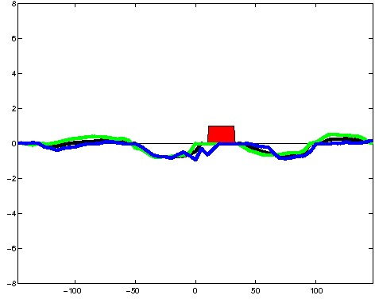
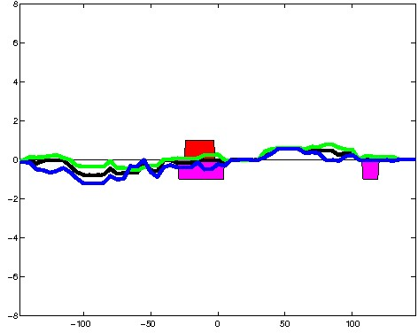
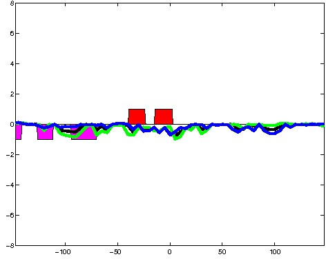
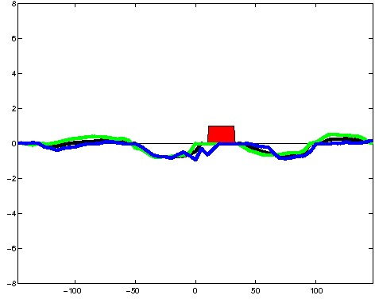
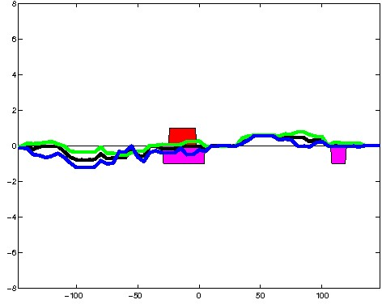
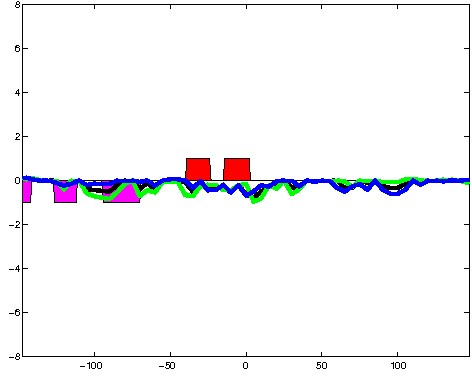
; picked in HepG2 (state 12:CtcfO, DNase); matched; chr11:17,405,549-17,405,843 (295bp)") 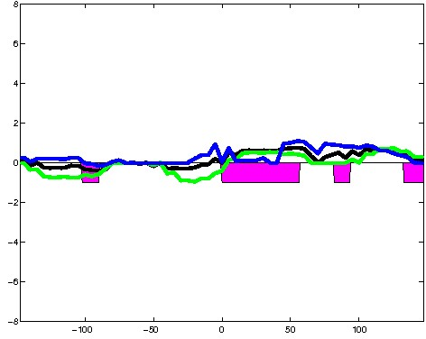
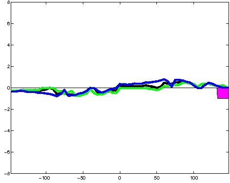
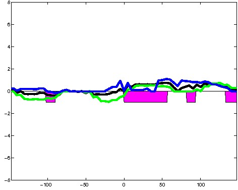
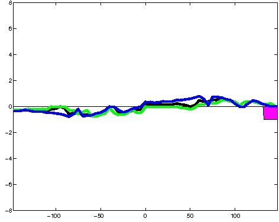
; picked in HepG2 (state 12:CtcfO, DNase); matched; chr1:38,554,009-38,554,303 (295bp)")
; picked in HepG2 (state 12:CtcfO, DNase); matched; chr8:38,823,969-38,824,263 (295bp)")
; picked in HepG2 (state 12:CtcfO, DNase); matched; chr21:48,046,889-48,047,183 (295bp)")
; picked in HepG2 (state 12:CtcfO, DNase); matched; chr16:2,473,149-2,473,443 (295bp)") 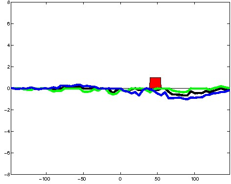
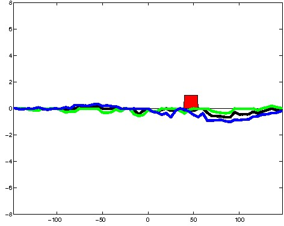
; picked in HepG2 (state 12:CtcfO, DNase); matched; chr5:157,375,809-157,376,103 (295bp)")
; picked in HepG2 (state 12:CtcfO, DNase); matched; chr6:55,393,489-55,393,783 (295bp)")
; picked in HepG2 (state 12:CtcfO, DNase); matched; chr16:50,482,489-50,482,783 (295bp)") 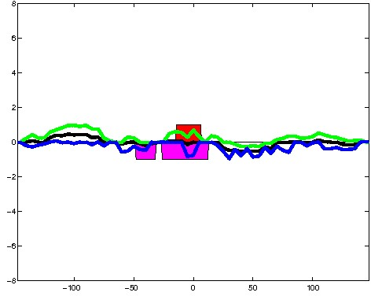
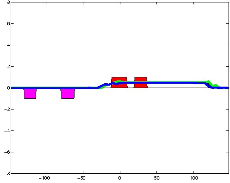
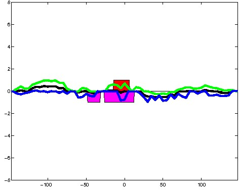
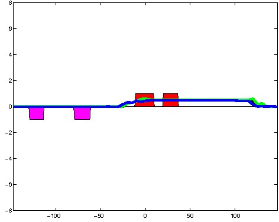
; picked in HepG2 (state 12:CtcfO, DNase); matched; chr3:14,550,469-14,550,763 (295bp)")
; picked in HepG2 (state 12:CtcfO, DNase); matched; chr11:440,149-440,443 (295bp)") 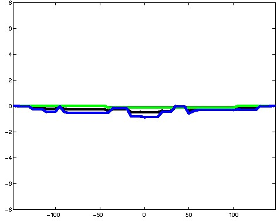
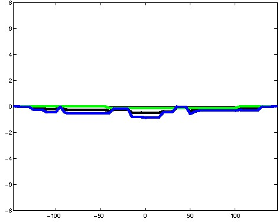
; picked in HepG2 (state 12:CtcfO, DNase); matched; chr3:169,480,729-169,481,023 (295bp)")
; picked in HepG2 (state 12:CtcfO, DNase); matched; chr2:79,446,529-79,446,823 (295bp)")
; picked in HepG2 (state 12:CtcfO, DNase); matched; chr10:126,360,189-126,360,483 (295bp)")
; picked in HepG2 (state 12:CtcfO, DNase); matched; chr4:103,930,329-103,930,623 (295bp)")
; picked in HepG2 (state 12:CtcfO, DNase); matched; chr14:103,544,609-103,544,903 (295bp)") 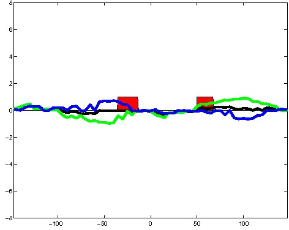
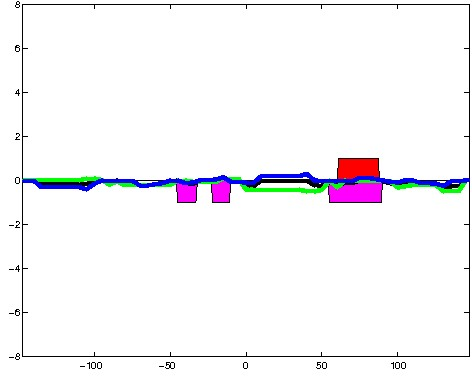
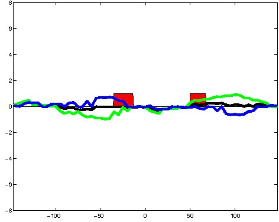
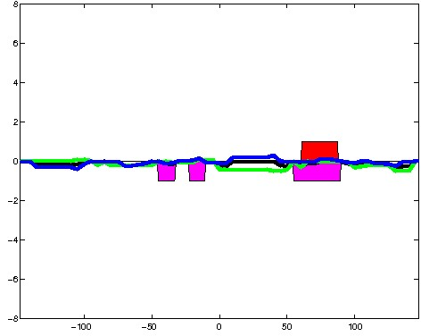
; picked in HepG2 (state 12:CtcfO, DNase); matched; chr18:60,990,269-60,990,563 (295bp)")
; picked in HepG2 (state 12:CtcfO, DNase); matched; chr20:55,956,809-55,957,103 (295bp)")
; picked in HepG2 (state 12:CtcfO, DNase); matched; chr6:53,302,369-53,302,663 (295bp)")
; picked in HepG2 (state 12:CtcfO, DNase); matched; chr18:72,369,589-72,369,883 (295bp)") 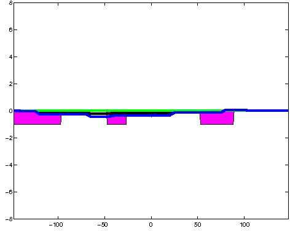
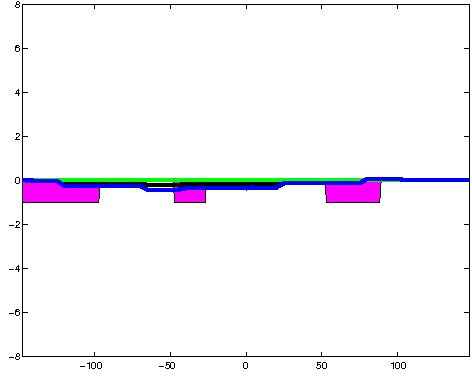
; picked in HepG2 (state 12:CtcfO, DNase); matched; chr2:138,938,569-138,938,863 (295bp)")